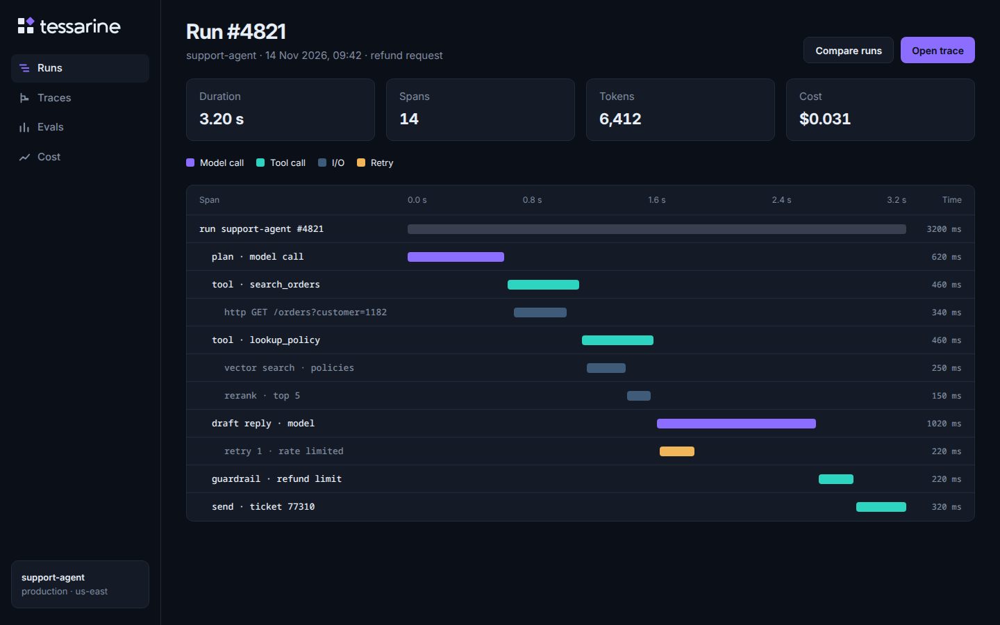
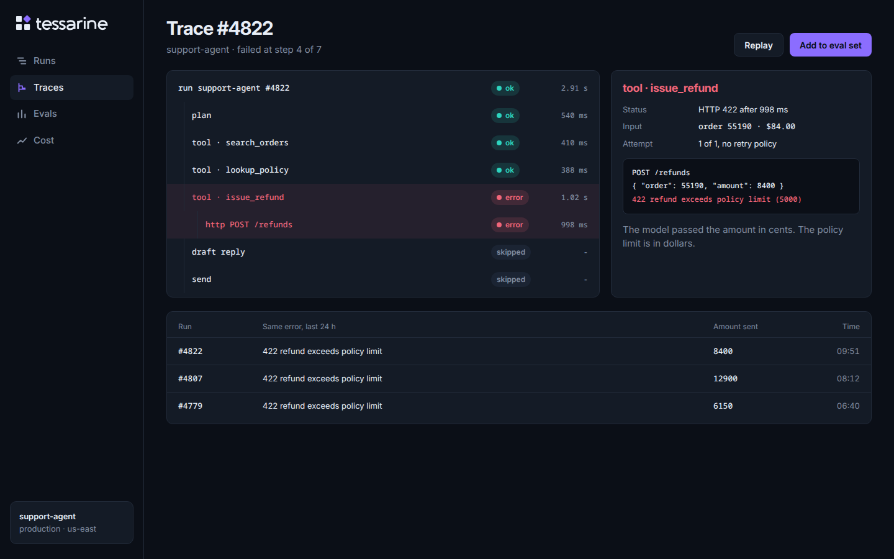
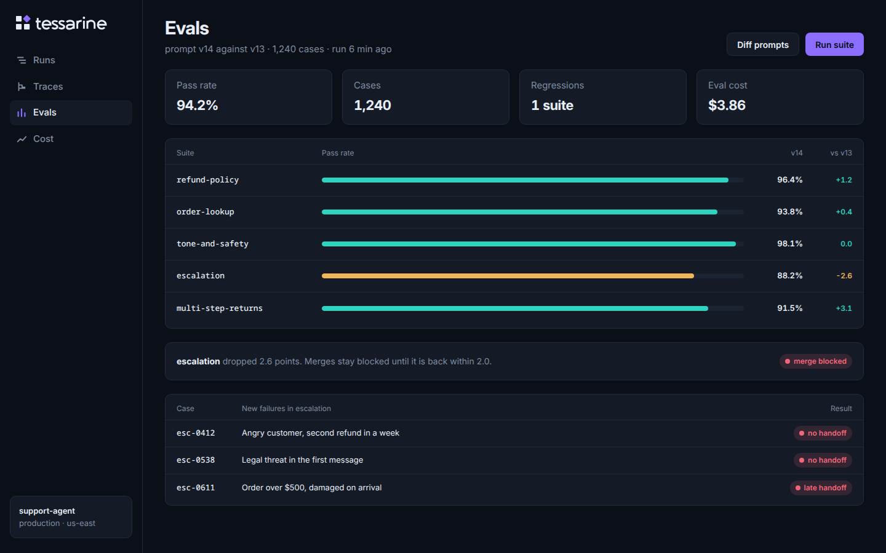
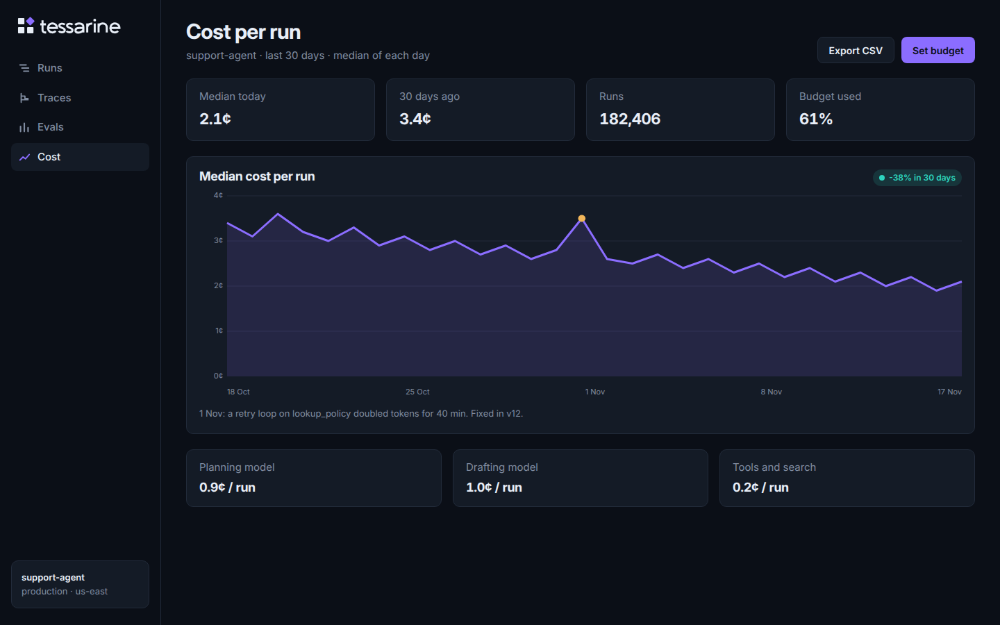

Traces
Nested spans for every tool and model call. Search 30 days of runs in under 200 ms.
Traces, evals and cost for every run, in one place.
npx tessarine init --project support-agent

Each tool call, model call and retry lands in one trace, with its latency, tokens and cost.



Nested spans for every tool and model call. Search 30 days of runs in under 200 ms.
Run a suite on every prompt change. A drop of 2 points or more blocks the merge.
Tokens and dollars per run, per user, per model. Budgets alert at 80%.